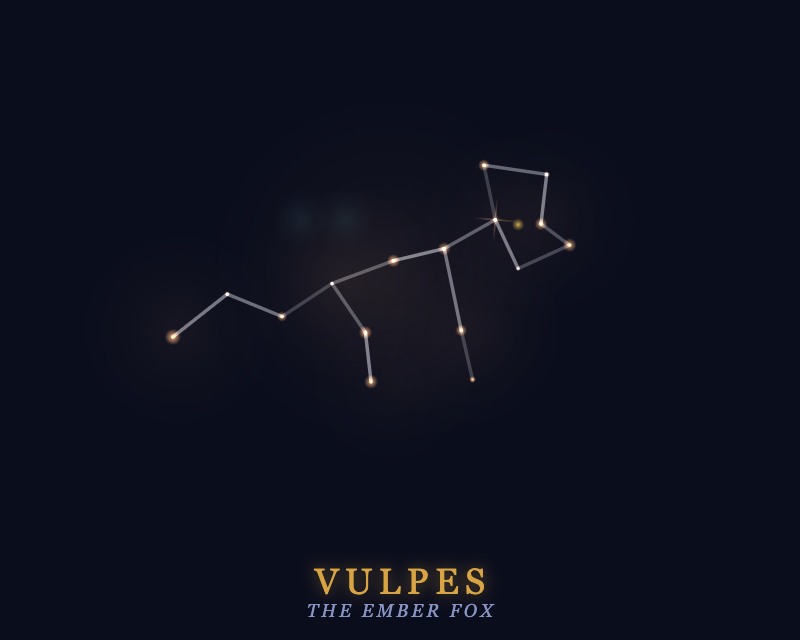
VULPES
THE EMBER FOX
basic lvl 1 · objects 30 battle · 30 home
NEW SKY PIECES
card · store file · game block · jumpr card · plain block · plain card
The fox as shipped, plus Anser as the wish-star at the head and the Dumbbell Nebula, the first planetary ever found, hung on the flank as a two-lobed teal lantern.
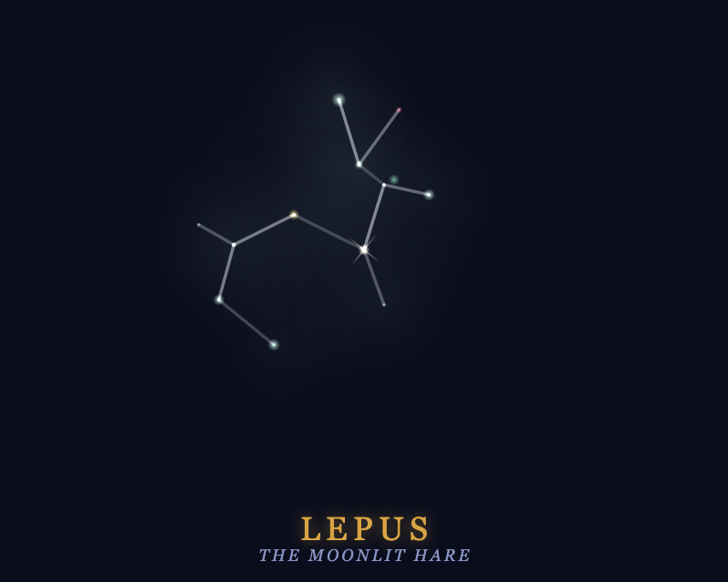
LEPUS
THE MOONLIT HARE
basic lvl 2 · objects 24 battle · 24 home
NEW SKY PIECES
card · store file · game block · jumpr card · plain block · plain card
Arneb cream at the chest as the wish-star, Nihal gold, and Hind's Crimson Star, a drop of blood on the ear tip, swelling and fading every six seconds (427 days compressed). Zero new objects.
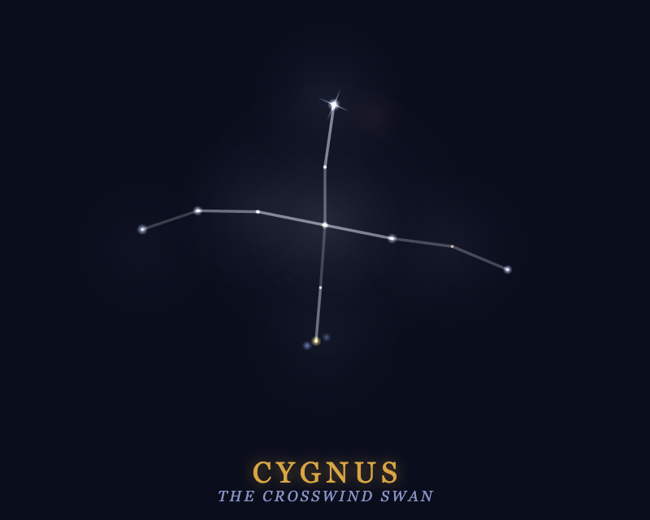
CYGNUS
THE CROSSWIND SWAN
basic lvl 3 · objects 25 battle · 25 home
NEW SKY PIECES
card · store file · game block · jumpr card · plain block · plain card
Deneb white at the tail as the wish-star, Sadr cream at the cross, Gienah orange, and the beak becomes Albireo, the two-coloured star, gold and blue twinkling in counter-phase. A rose North America blob beside Deneb.
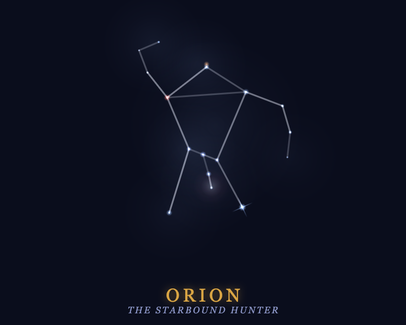
ORION
THE STARBOUND HUNTER
mini lvl 4 · objects 30 battle · 30 home
NEW SKY PIECES
card · store file · game block · jumpr card · plain block · plain card
Betelgeuse red on the shoulder, Rigel blue-white at the foot as the wish-star, the belt three class-1 blue-whites, and the lower sword star becomes the Orion Nebula, rose over a teal core. Jar 30 at home, the amber line exactly.
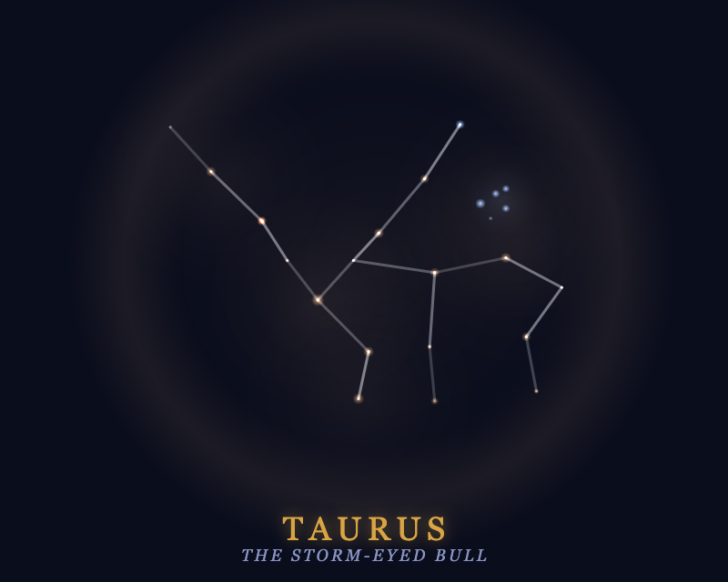
TAURUS
THE STORM-EYED BULL
boss lvl 1 · objects 36 battle · 35 home
NEW SKY PIECES
card · store file · game block · jumpr card · plain block · plain card
Aldebaran orange at the eye, Elnath blue-white at the horn tip, the Pleiades in their blue haze on the shoulder, and on the far horn the Crab's pulsar beating once a second. One object; the figure is past the amber line as shipped (34 bare), so no cross.
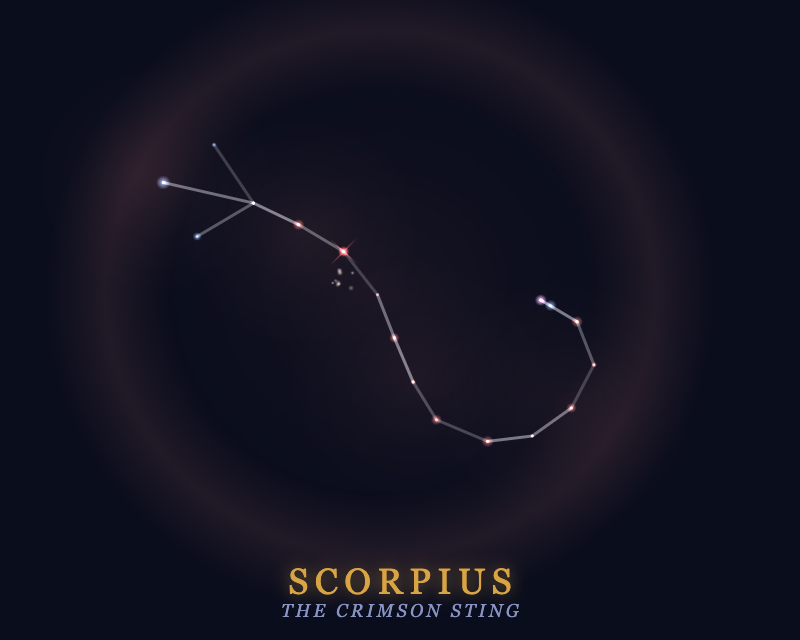
SCORPIUS
THE CRIMSON STING
boss lvl 2 · objects 31 battle · 30 home
NEW SKY PIECES
card · store file · game block · jumpr card · plain block · plain card
Antares red at the heart, the rival of Mars, as the wish-star; the head trio blue-white; the stinger becomes the Cat's Eyes pair; M4 sits eight units below the heart as a baked cluster.
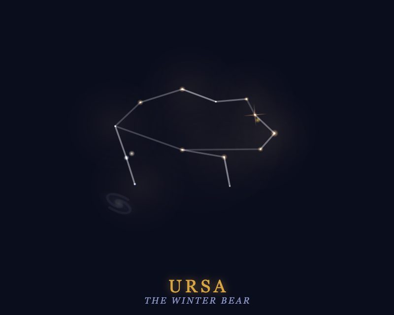
URSA
THE WINTER BEAR
mini lvl 2 · objects 28 battle · 28 home
NEW SKY PIECES
card · store file · game block · jumpr card · plain block · plain card
Dubhe orange at the head as the wish-star, Alkaid blue-white at the tail tip, Mizar and Alcor, the horse and rider, and the Whirlpool Galaxy dragged past the tail.
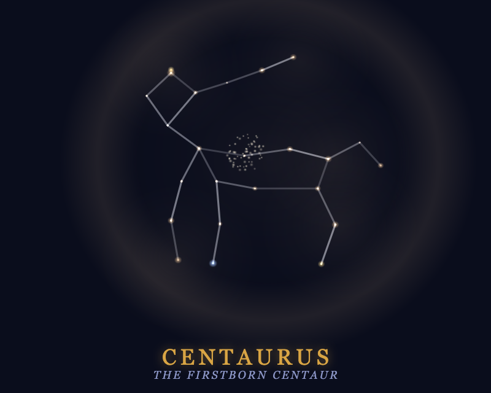
CENTAURUS
THE FIRSTBORN CENTAUR
boss lvl 4 · objects 36 battle · 35 home
NEW SKY PIECES
card · store file · game block · jumpr card · plain block · plain card
The front hooves are the Pointers, Rigil Kentaurus gold and Hadar blue-white, the two stars that point at the Southern Cross; Omega Centauri, ten million stars, rides the back as one baked cluster. One object; the figure is past the amber line as shipped (34 bare), so no cross.
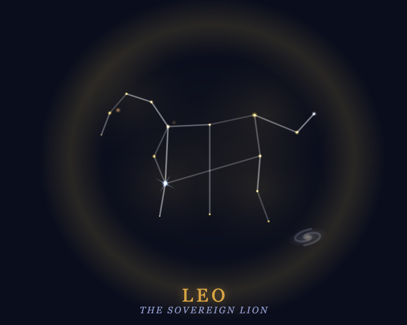
LEO
THE SOVEREIGN LION
boss lvl 1 · objects 30 battle · 29 home
NEW SKY PIECES
card · store file · game block · jumpr card · plain block · plain card
Regulus, the little king, blue-white at the base of the Sickle as the wish-star; Algieba on the neck becomes the gold double, its orange companion four units off; Denebola white at the tail tip. Under the hind leg one smudge of the Leo Triplet, a galaxy the lion stands over. The eye stays in the mane.
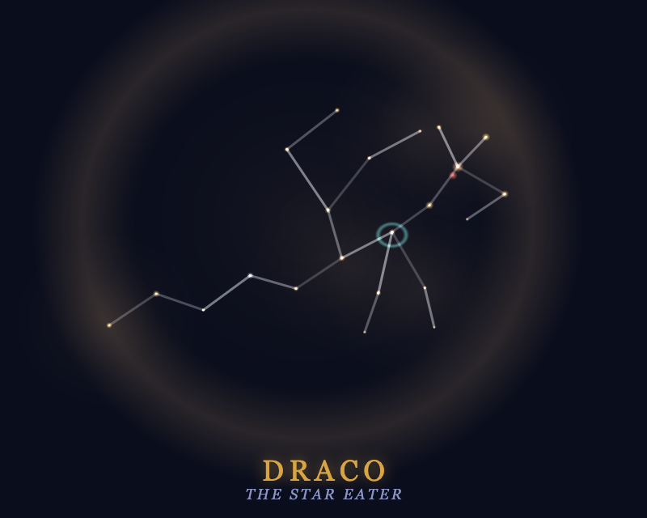
DRACO
THE STAR EATER
boss lvl 2 · objects 35 battle · 34 home
NEW SKY PIECES
card · store file · game block · jumpr card · plain block · plain card
Eltanin orange at the head, right under the red eye; Rastaban gold beside it on the jaw; Thuban, the pole star the pyramids were built to, plain white on the coils where nobody looks now. In the throat the Cat's Eye, a teal ring: the last star it swallowed. One object; the figure is past the amber line as shipped (33 bare), so no cross.
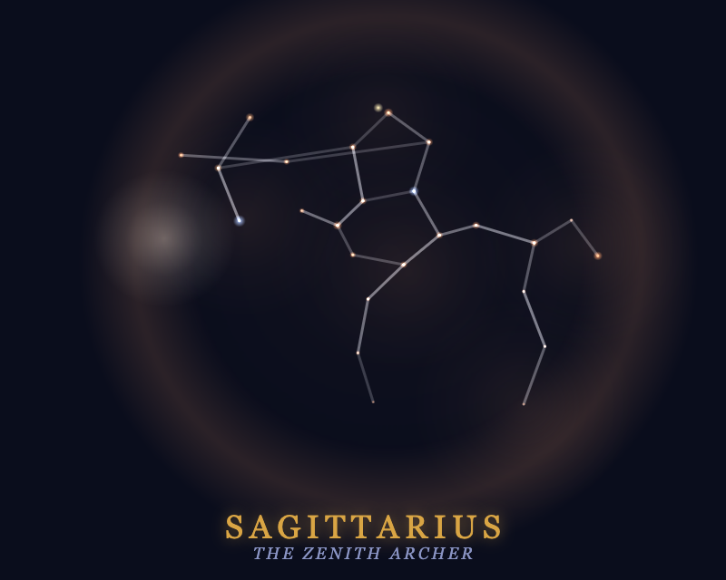
SAGITTARIUS
THE ZENITH ARCHER
boss lvl 4 · objects 38 battle · 37 home
NEW SKY PIECES
card · store file · game block · jumpr card · plain block · plain card
The bow is the Teapot's spout: Kaus Australis blue-white at its foot, Kaus Media and Kaus Borealis orange up the stave, Nunki blue-white on the shoulder. Where the arrow points, the heart of the galaxy glows as a cream star cloud: the archer aims at the centre of everything. One object; the figure is past the amber line as shipped (36 bare), so no cross.
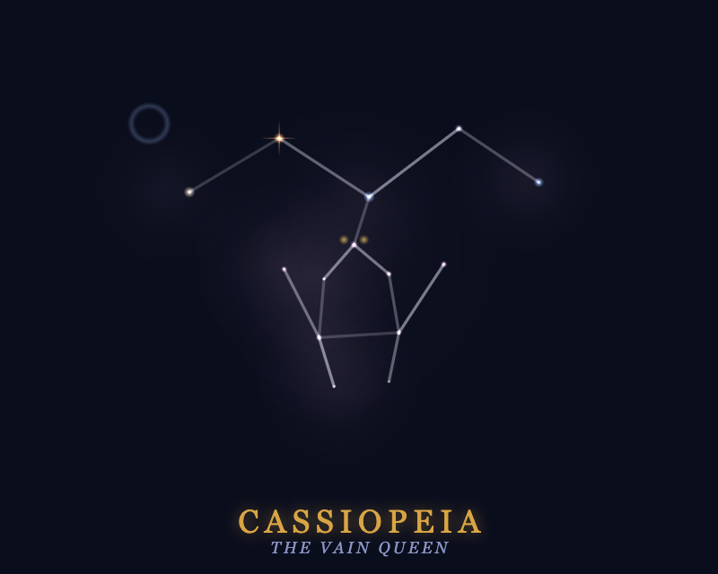
CASSIOPEIA
THE VAIN QUEEN
mini lvl 3 · objects 29 battle · 29 home
NEW SKY PIECES
card · store file · game block · jumpr card · plain block · plain card
The crown is the W, and every point wears its true jewel: Caph cream, Schedar orange as the wish-star, gamma Cas blue-white and breathing (a shell star that erupts), Ruchbah white, Segin blue-white. Off the crown's edge a faint blue ring: Tycho's Star of 1572, the supernova that proved the heavens change.
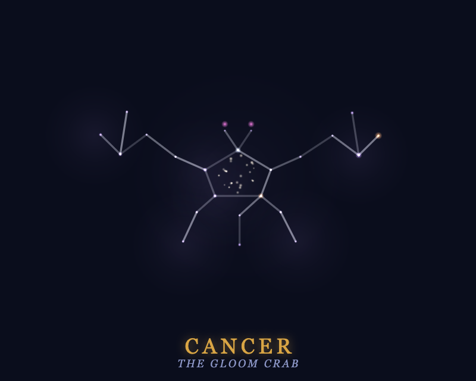
CANCER
THE GLOOM CRAB
mini lvl 1 · objects 36 battle · 36 home
NEW SKY PIECES
card · store file · game block · jumpr card · plain block · plain card
The crab has no bright stars, so the Beehive is the upgrade: two dozen cream stars swarming inside the shell between the two Donkeys, Asellus Borealis white above and Asellus Australis orange below; Tarf orange at the far claw. One object; the figure is past the amber line as shipped (35 bare), so no cross.
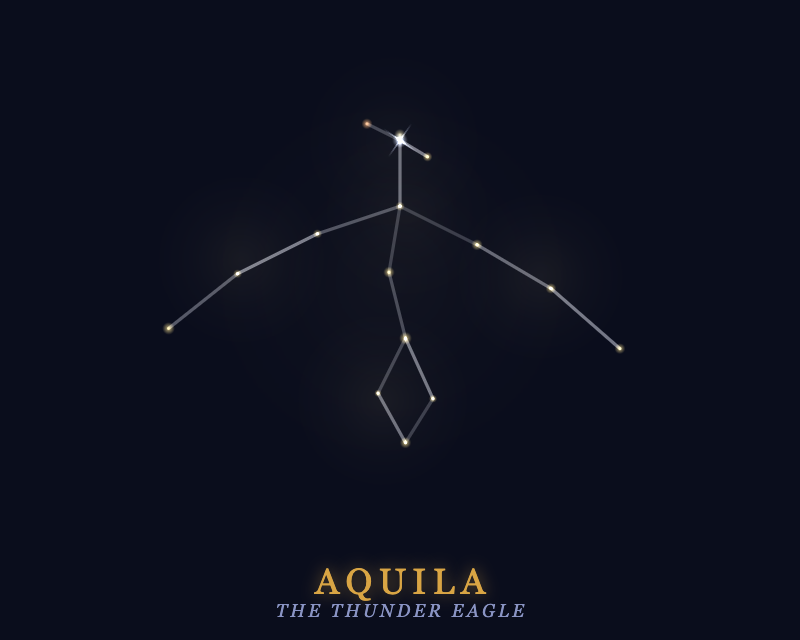
AQUILA
THE THUNDER EAGLE
mini lvl 2 · objects 26 battle · 26 home
NEW SKY PIECES
card · store file · game block · jumpr card · plain block · plain card
Altair, the eagle's white head star, is the wish-star, with Tarazed orange and Alshain gold flanking it: the Altair line, three colours in a row you can find tonight. Eta Aquilae on the belly is a Cepheid, breathing every 7.2 seconds. Hues, one cross and one pulse carry the whole upgrade.
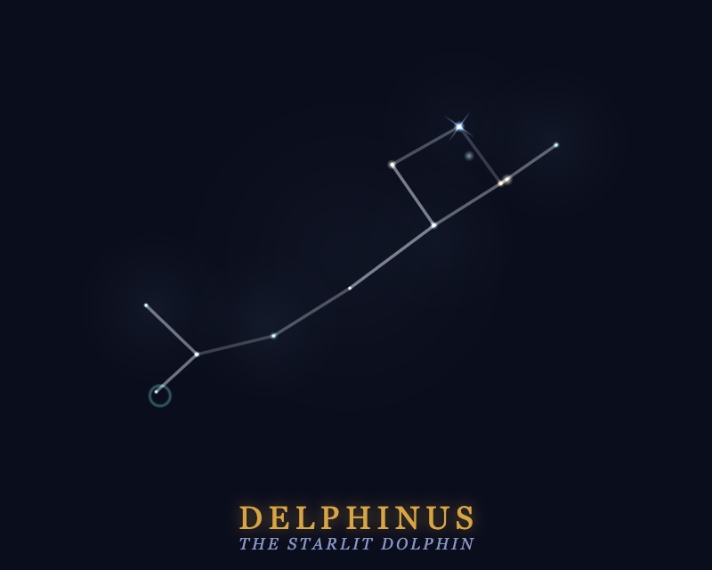
DELPHINUS
THE STARLIT DOLPHIN
basic lvl 1 · objects 23 battle · 23 home
NEW SKY PIECES
card · store file · game block · jumpr card · plain block · plain card
The head is Job's Coffin, the little diamond: Sualocin blue-white as the wish-star, Rotanev cream beside it (two stars named for an astronomer spelled backwards), gamma Delphini at the nose a gold-and-cream pair. A tiny teal ring on the tail fluke is the Blue Flash Nebula.
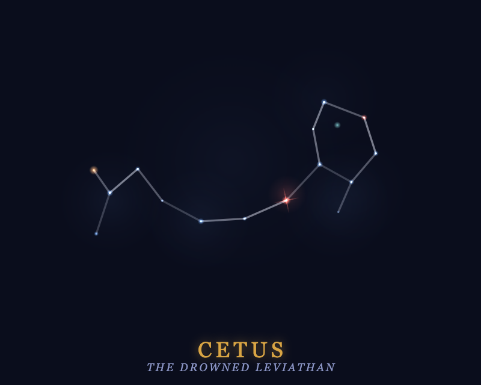
CETUS
THE DROWNED LEVIATHAN
mini lvl 4 · objects 27 battle · 27 home
NEW SKY PIECES
card · store file · game block · jumpr card · plain block · plain card
Mira, the Wonderful, the first variable star ever known: a red giant on the neck that is the wish-star at full blaze and then fades to an ember and back, its cross with it, over 33 seconds (332 days compressed), a red halo holding its place while it is gone. Menkar red at the jaw, Diphda orange at the tail. One object: the halo.
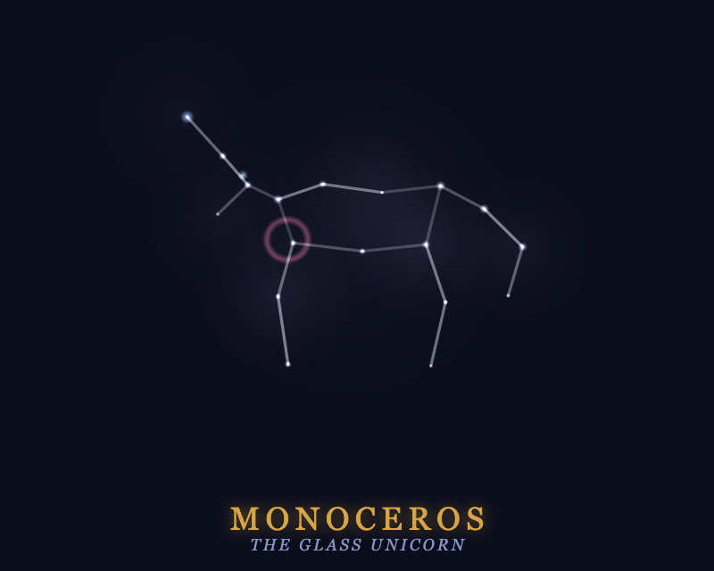
MONOCEROS
THE GLASS UNICORN
mini lvl 3 · objects 30 battle · 30 home
NEW SKY PIECES
card · store file · game block · jumpr card · plain block · plain card
The horn tip is beta Monocerotis, blue-white and class 1, a triple in any telescope; on the chest the Rosette, a rose ring with the young cluster in its hole, the flower the unicorn wears. One object: the jar sits at 30, the amber line, so the horn goes without its cross.
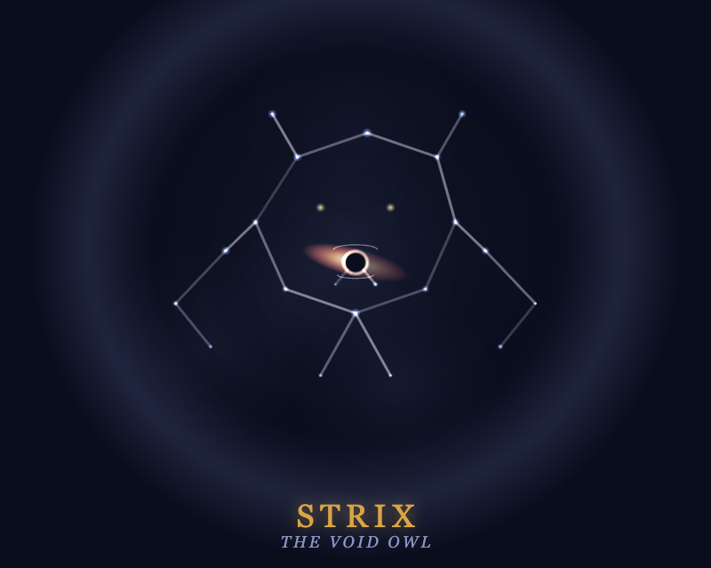
STRIX
THE VOID OWL
boss lvl 1 · objects 35 battle · 34 home
NEW SKY PIECES
card · store file · game block · jumpr card · plain block · plain card
Invented, so its jewel is invented: the void is its heart. A black hole on the chest, a shadow the colour of the sky inside a cream photon ring with a small orange accretion disc scrolling round it, the gold eyes watching from above; at home only the ring shows. One object; the figure is past the amber line as shipped (33 bare).
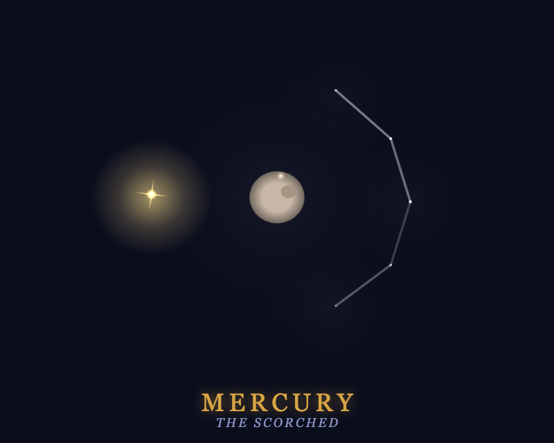
MERCURY
THE SCORCHED
basic lvl 1 · objects 19 battle · 19 home
NEW SKY PIECES
card · store file · game block · jumpr card · plain block · plain card
The smallest world and the nearest to the Sun, baked on one face and frozen on the other, cratered like our Moon; the Sun sits at its shoulder, near enough to scorch, and the Caloris Basin, an impact scar 1,500 km wide, drifts across its face every 59 days (118 s here). The eye is Hokusai, the young crater whose rays reach halfway round the planet.
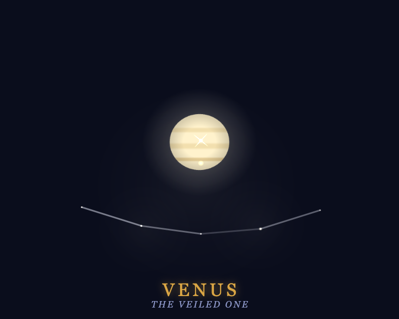
VENUS
THE VEILED ONE
mini lvl 1 · objects 17 battle · 17 home
NEW SKY PIECES
card · store file · game block · jumpr card · plain block · plain card
The brightest thing in the night after the Moon, wrapped in a veil of sulphur cloud so thick no one saw its ground until radar did; it never twinkles, and its clouds race round in four days while the ground beneath takes 243. The attack is the veil flashing white. The eye is the south polar vortex, a storm with two eyes of its own.
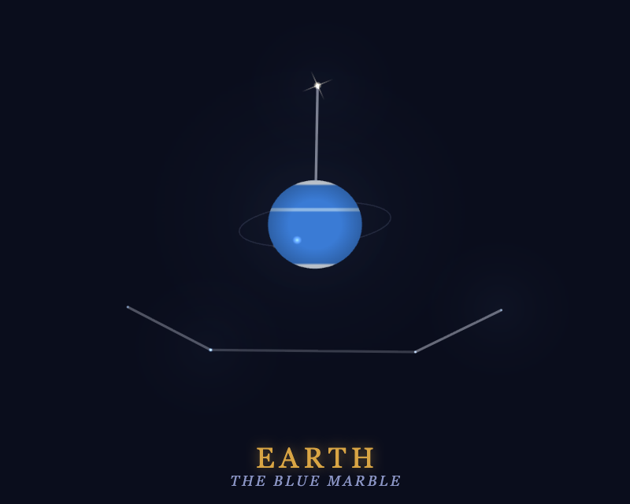
EARTH
THE BLUE MARBLE
mini lvl 2 · objects 19 battle · 19 home
NEW SKY PIECES
card · store file · game block · jumpr card · plain block · plain card
Home: an ocean world with white weather and one green-brown continent turning once a day (24 s), ice at both poles, its axis drawn as a line up to Polaris, the still star everything else wheels round. The Moon, thirty Earths out, circles every 27 days (54.6 s) showing the same face the whole way. The eye is a hurricane over the ocean.
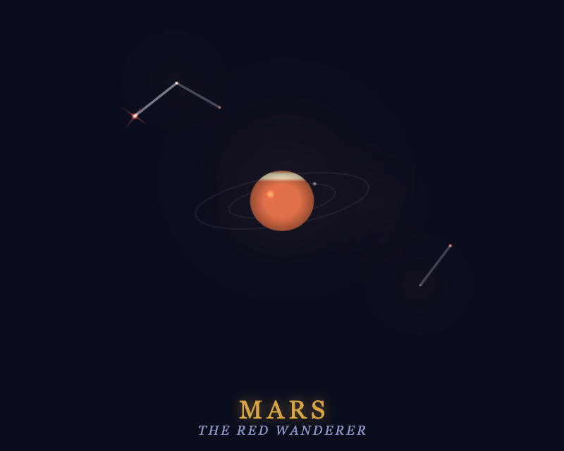
MARS
THE RED WANDERER
basic lvl 2 · objects 20 battle · 20 home
NEW SKY PIECES
card · store file · game block · jumpr card · plain block · plain card
Half Earth's size and rust-red, an ice cap at the north pole and Syrtis Major, a dark shield of old lava, drifting across its face once a day (24.6 s). Two potato moons ride it, Phobos so close and fast it laps the planet three times a day, Deimos further out; both are the bolts of the fling. Antares, the rival of Mars, twinkles red at the corner; Mars never twinkles. The eye is Olympus Mons.
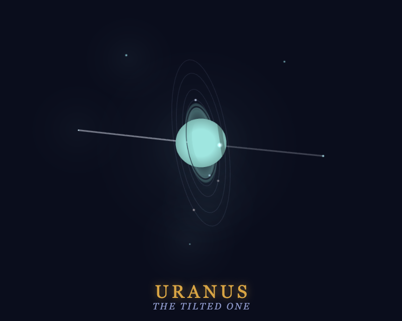
URANUS
THE TILTED ONE
mini lvl 3 · objects 25 battle · 25 home
NEW SKY PIECES
card · store file · game block · jumpr card · plain block · plain card
A pale cyan world knocked onto its side: it rolls round the Sun with a pole facing forward, so its thin dark rings stand on end like a hoop and its five big moons, named for Shakespeare's people, climb up and over instead of left to right (1 day = 2 s). The moons are the bolts of the fling; the eye is the bright hood over the pole that faces the Sun.
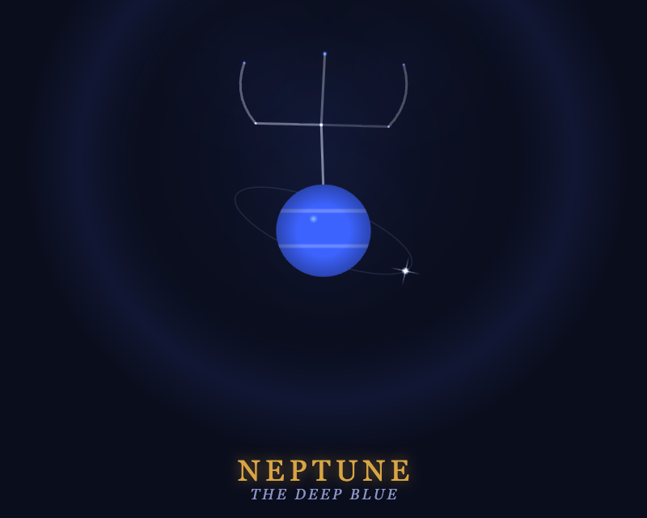
NEPTUNE
THE DEEP BLUE
boss lvl 3 · objects 22 battle · 21 home
NEW SKY PIECES
card · store file · game block · jumpr card · plain block · plain card
The farthest world and the windiest, deep blue from methane, white cirrus streaking round it at 2,000 km an hour and a Great Dark Spot the size of Earth for an eye. Triton, its big moon, circles backwards (the one hoop in the store that runs clockwise) and is slowly falling in. The trident stands above it, its shaft driven into the world.
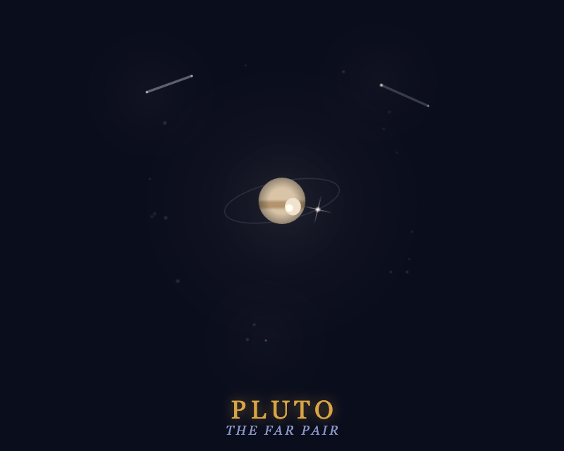
PLUTO
THE FAR PAIR
basic lvl 3 · objects 20 battle · 20 home
NEW SKY PIECES
card · store file · game block · jumpr card · plain block · plain card
A double world at the cold edge of the map, inside the belt of ice it belongs to: Charon is half Pluto's size, so the two swing round a point in the empty space between them every 6.4 days (12.8 s), each forever showing the other the same face. The eye is the pale heart, Sputnik Planitia, a plain of nitrogen ice.
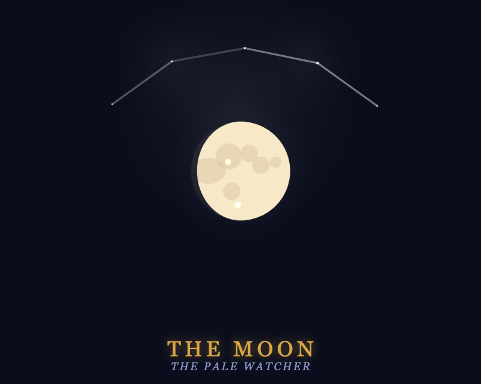
THE MOON
THE PALE WATCHER
mini lvl 2 · objects 16 battle · 16 home
NEW SKY PIECES
card · store file · game block · jumpr card · plain block · plain card
Our own Moon three nights from full, the dark seas of old lava on its face and Tycho, the bright young crater, throwing rays across the south. It never twinkles; it turns once for every trip round us, so we only ever see this side. Waxing gibbous tonight (25 August 2026); on the 28th it goes copper in a total eclipse. The eyes are Tycho and Copernicus.
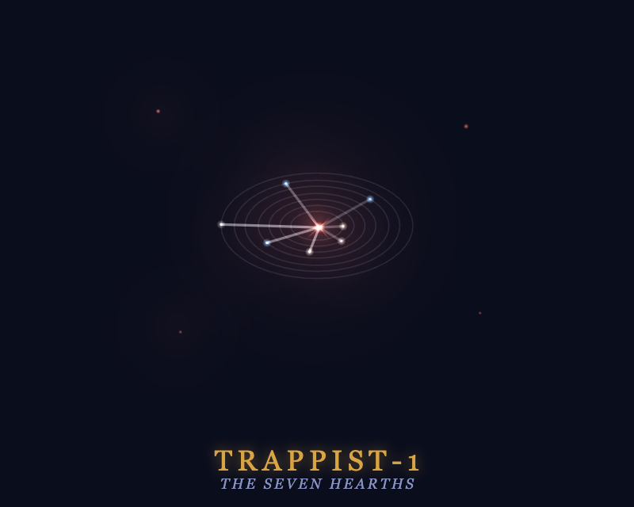
TRAPPIST-1
THE SEVEN HEARTHS
mini lvl 2 · objects 26 battle · 26 home
NEW SKY PIECES
card · store file · game block · jumpr card · plain block · plain card
A red dwarf forty light-years off with seven Earth-sized worlds packed closer than Mercury, circling in 1.5 to 19 seconds (one real day = one second) in a chain of resonances that line up like a music box; the warm three are blue. Seven spokes run from the hearth to its worlds and turn like clock hands; seven bolts in order. The eye is the hearth.
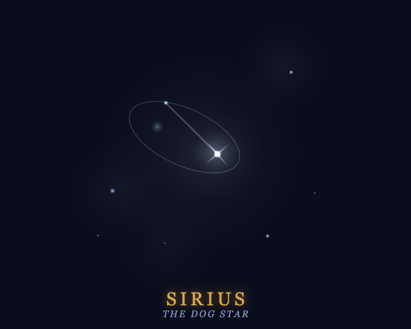
SIRIUS
THE DOG STAR
basic lvl 1 · objects 21 battle · 21 home
NEW SKY PIECES
card · store file · game block · jumpr card · plain block · plain card
The brightest star in the night, twice the Sun and 8.6 light-years off, in a big white glow, with the Pup, a white dwarf the size of Earth, pale blue on a fifty-second eccentric hoop (one second = one year) that swings in close and races past; the line between them is the leash. Mirzam the Announcer rises just ahead of it. The eye is Sirius itself.
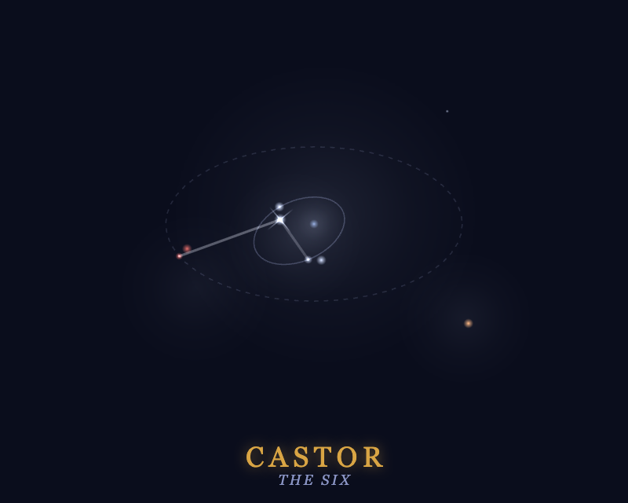
CASTOR
THE SIX
mini lvl 2 · objects 19 battle · 19 home
NEW SKY PIECES
card · store file · game block · jumpr card · plain block · plain card
One star to the eye, six in truth: two white pairs waltzing round each other on a sixty-second hoop in a shared glow, each pair itself a tight binary spinning in days, and far out on a dashed rail a third pair of red dwarfs, YY Geminorum, eclipsing each other every 1.6 seconds. Pollux, the other twin, sits orange at the corner. The eye is the heart of the waltz.
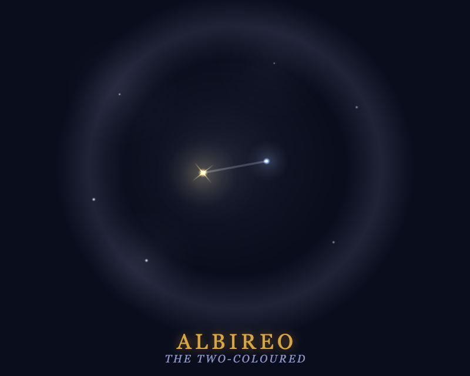
ALBIREO
THE TWO-COLOURED
basic lvl 1 · objects 21 battle · 21 home
NEW SKY PIECES
card · store file · game block · jumpr card · plain block · plain card
The prettiest double in any small telescope, drawn through one: a gold giant and a blue star close together in the round of the eyepiece, each in its own glow, the one bridge line between them, the gold one breathing every 2.4 seconds. Nothing else: restraint is the object. The eye is the blue one.
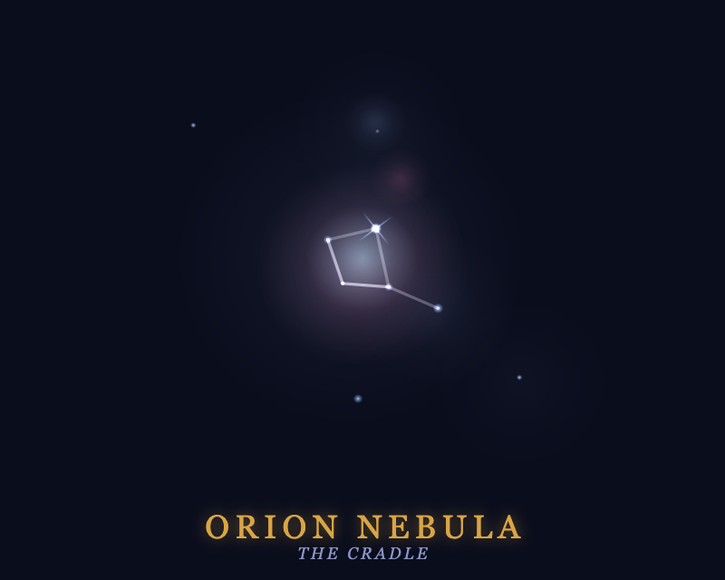
ORION NEBULA
THE CRADLE
mini lvl 2 · objects 24 battle · 24 home
NEW SKY PIECES
card · store file · game block · jumpr card · plain block · plain card
The nearest great star factory, 1,344 light-years down the sword of Orion: a rose cloud over a teal core, lit by the four Trapezium stars in its heart, with M43 budding off the top, the Running Man above and Hatysa below. The eye is the brightest Trapezium star.
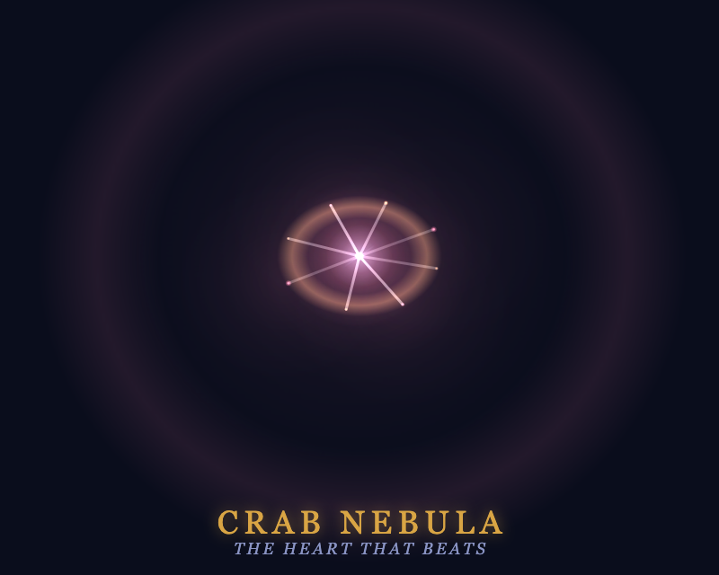
CRAB NEBULA
THE HEART THAT BEATS
boss lvl 2 · objects 25 battle · 24 home
NEW SKY PIECES
card · store file · game block · jumpr card · plain block · plain card
The wreck of a star seen exploding in 1054, bright enough to read by in daylight for three weeks; the rose shell and its orange filaments still fly outward, and at the centre a neutron star spins thirty times a second, compressed here to a two-a-second heartbeat. The eye IS the pulsar.
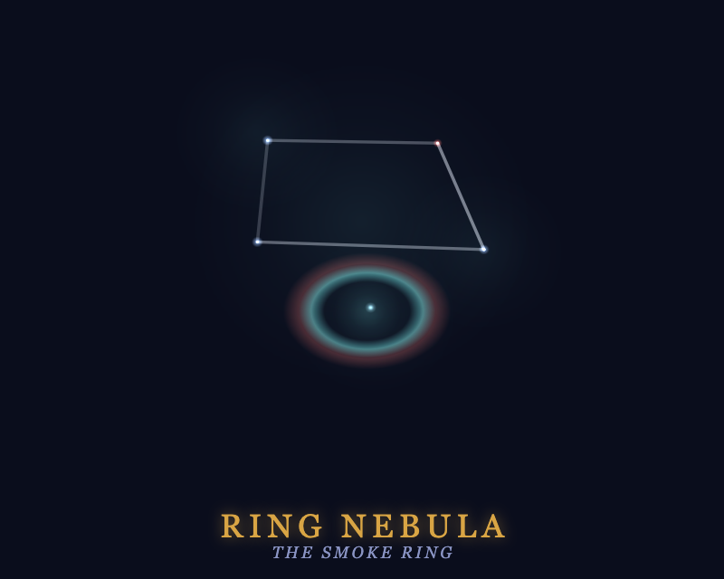
RING NEBULA
THE SMOKE RING
basic lvl 2 · objects 16 battle · 16 home
NEW SKY PIECES
card · store file · game block · jumpr card · plain block · plain card
A dying sun's shed shell hung under the harp's bottom string, teal inside and red at the rim, with the white-dwarf ember it left behind glowing faintly at the centre every three seconds; Sheliak on the string above winks every 12.9. The eye is the ember.
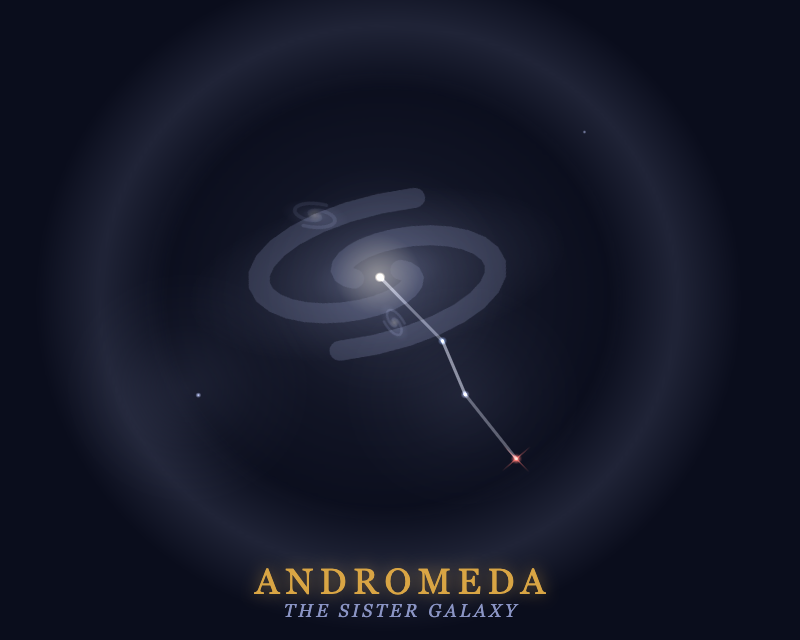
ANDROMEDA
THE SISTER GALAXY
boss lvl 4 · objects 20 battle · 19 home
NEW SKY PIECES
card · store file · game block · jumpr card · plain block · plain card
Two and a half million light-years off and six full Moons wide, the farthest thing a bare eye can see, found by hopping Mirach to mu to nu; its two small companions M32 and M110 cling to the disc, and it is coming at us, due in four billion years. The eye is the core.
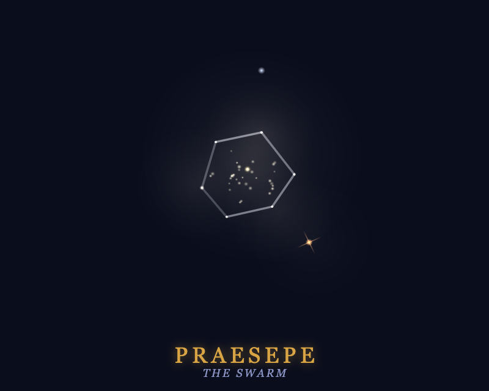
PRAESEPE
THE SWARM
basic lvl 1 · objects 21 battle · 21 home
NEW SKY PIECES
card · store file · game block · jumpr card · plain block · plain card
The Beehive, M44, a thousand stars in the manger between the two donkeys of Cancer, a smudge to the bare eye: thirty baked in the swarm and six live ones ringing it as one honeycomb cell, Asellus Australis orange at the rim as the wish-star. Six bolts in the volley; the eye is the heart of the hive.
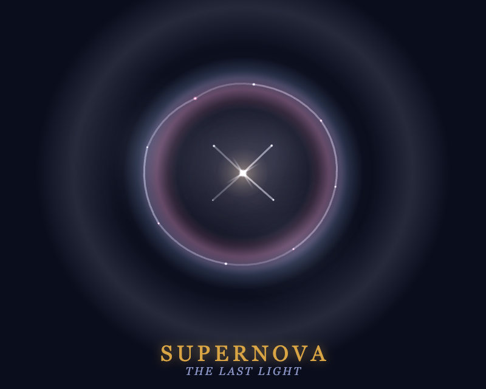
SUPERNOVA
THE LAST LIGHT
boss lvl 3 · objects 30 battle · 29 home
NEW SKY PIECES
card · store file · game block · jumpr card · plain block · plain card
Tycho's star of 1572, a star that ended and for two weeks burned bright enough to see at noon: a blazing white core breathing on a two-second pulse inside a gold flash, a rose shell of torn filaments and the blue-white shock ring frozen at the edge of the box; the shell ripples, the core stays. The eye is the neutron star left in the middle; the nova at amp 1.5 flashes the whole shell.
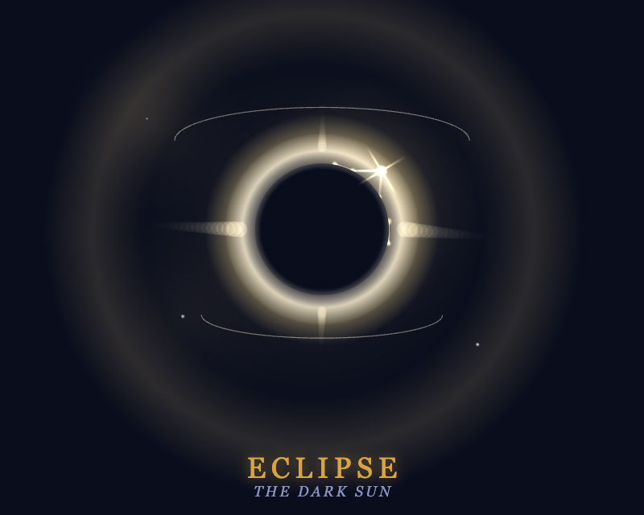
ECLIPSE
THE DARK SUN
boss lvl 2 · objects 29 battle · 28 home
NEW SKY PIECES
card · store file · game block · jumpr card · plain block · plain card
The Moon exactly covers the Sun, four hundred times smaller and four hundred times nearer, and the stars come out at noon: a black disc with the pearl corona round it, two long streamers east and west and short plumes at the poles, five Baily's beads along the rim where the Moon's valleys let light through, and the diamond ring blazing at the upper limb. The diamond is the eye; the breath is the corona streaming.
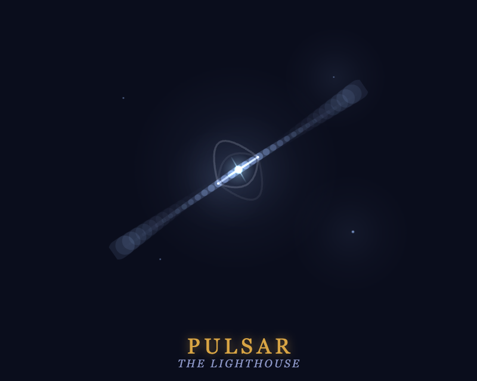
PULSAR
THE LIGHTHOUSE
mini lvl 3 · objects 22 battle · 22 home
NEW SKY PIECES
card · store file · game block · jumpr card · plain block · plain card
A sun's weight packed into a city-sized ball, sweeping two beams from its magnetic poles: the first one found, in 1967, ticked every 1.337 seconds and they called it LGM-1, little green men. The core, a pale white-dwarf blue, blinks to nothing and back on exactly that clock; two beams lie along the tilted axis and four field loops arc from cap to cap. The eye is the core; the volley is timed to the beam.
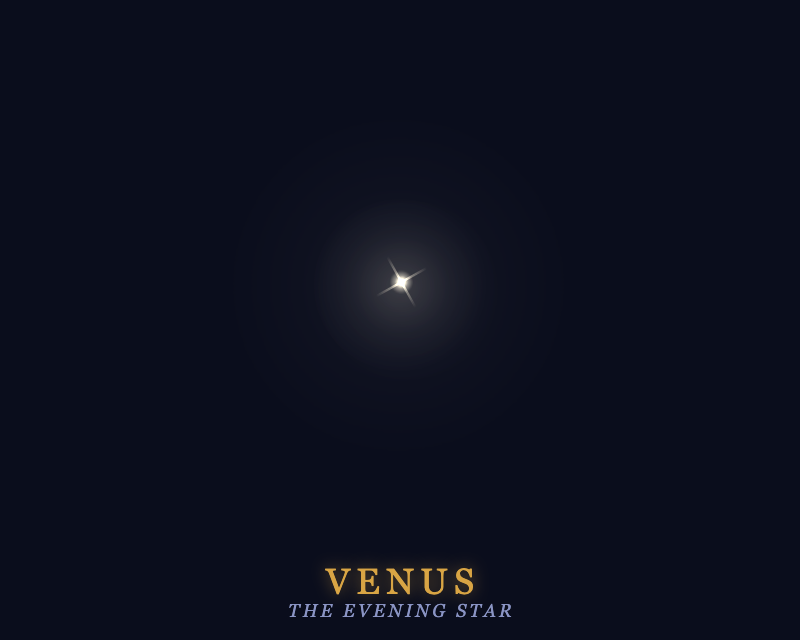
VENUS
THE EVENING STAR
menu decor · objects 8 battle · 8 home
NEW SKY PIECES
card · store file · game block · jumpr card
The brightest planet, following the Sun down; the first star out at dusk, and the one that never twinkles.
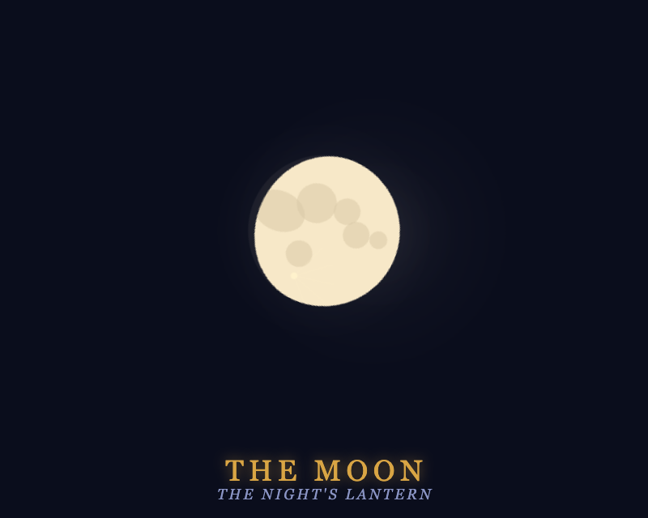
THE MOON
THE NIGHT'S LANTERN
menu decor · objects 7 battle · 7 home
NEW SKY PIECES
card · store file · game block · jumpr card
The menu's own moon at its seat, upgraded to tonight's true phase (days since 2000-01-06T18:14Z over 29.530589, mod 1), with the maria, Tycho and its rays, and earthshine on the dark face. On the MENU SKY board dial D13 keeps the shipped crescent until flipped.
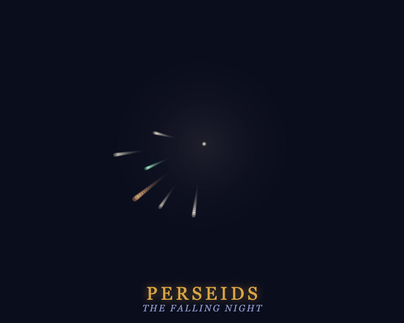
PERSEIDS
THE FALLING NIGHT
menu decor · objects 12 battle · 12 home
NEW SKY PIECES
card · store file · game block · jumpr card
Comet dust from Swift-Tuttle hitting the air a hundred kilometres up every August the twelfth; every streak flies away from one point in Perseus, the radiant. Six streaks caught mid-fall: four cream, one green (magnesium), one orange fireball (sodium). Only the radiant twinkles.
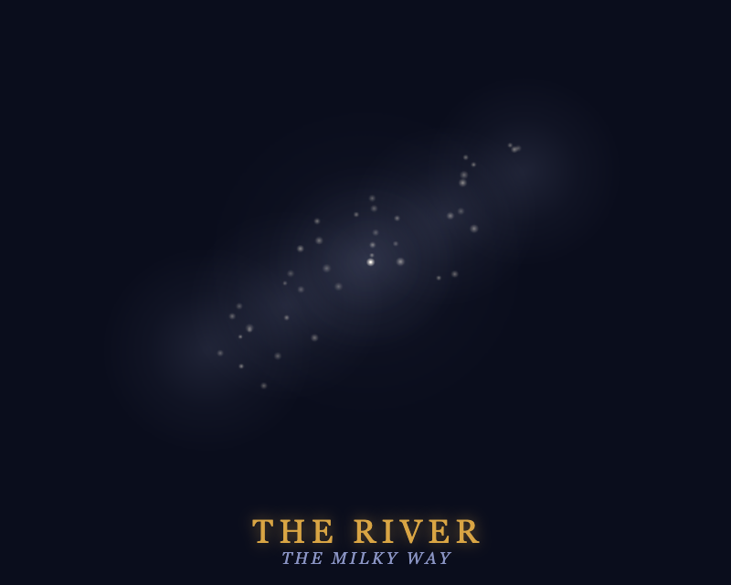
THE RIVER
THE MILKY WAY
menu decor · objects 15 battle · 15 home
NEW SKY PIECES
card · store file · game block · jumpr card
Our own galaxy seen edge-on from inside, standing up from the south-west on an August dusk: five faint overlapping blobs make the band and forty baked dust stars ride it in four clusters. Nothing moves but the dust's twinkle, and nothing here is brighter than the showcase.
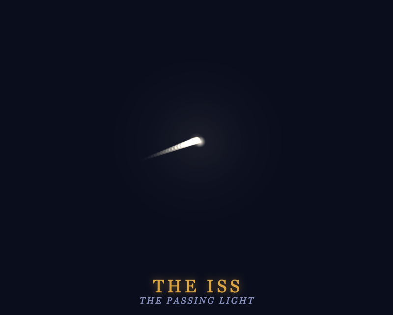
THE ISS
THE PASSING LIGHT
menu decor · objects 8 battle · 8 home
NEW SKY PIECES
card · store file · game block · jumpr card
The space station crossing at dusk: a steady cream point that never twinkles, no cross, brighter than any star for the thirty-five seconds it takes to cross, then gone into Earth's shadow before the far side. The short bright streak behind it is the store's way of saying it moves.
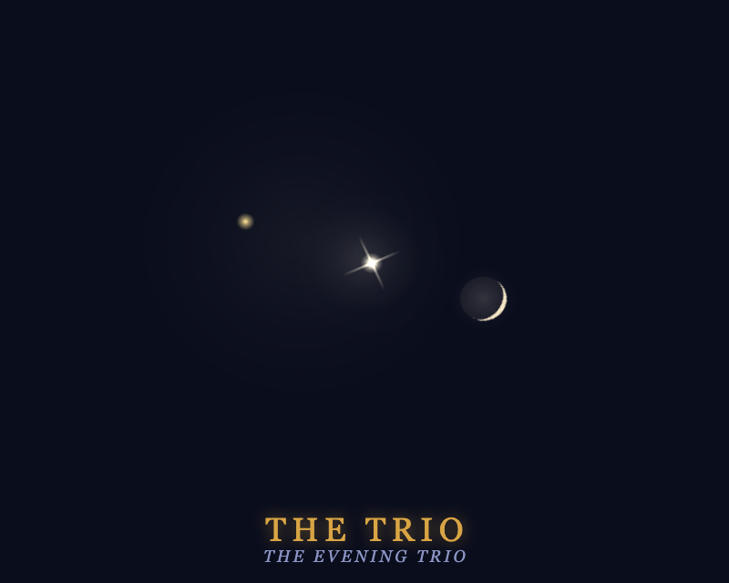
THE TRIO
THE EVENING TRIO
menu decor · objects 10 battle · 10 home
NEW SKY PIECES
card · store file · game block · jumpr card
Three wanderers in one line low over the sunset, the way the sky does it a few evenings a year: a two-day-old crescent Moon nearest the Sun with earthshine on its dark face, Venus cream and blazing with the cross, Jupiter gold above and left. None of the three twinkles.
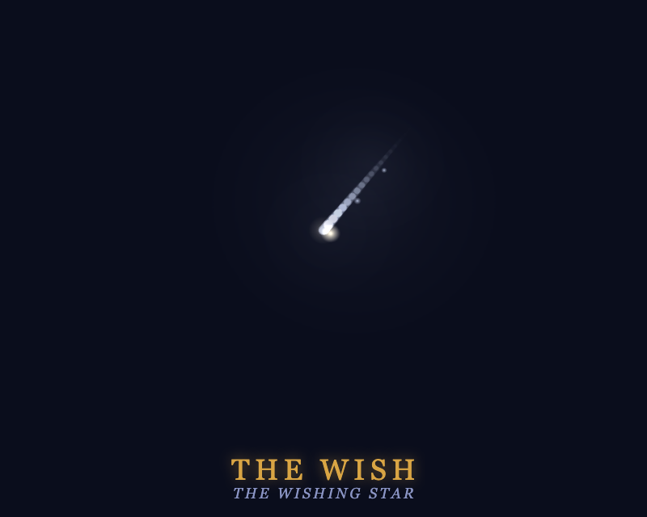
THE WISH
THE WISHING STAR
menu decor · objects 11 battle · 11 home
NEW SKY PIECES
card · store file · game block · jumpr card
One grain of comet dust, white-hot for a third of a second: a class-1 cream head in its own small bloom, a white streak trailing back toward the radiant in the top-right corner with two sparks still burning in it. The head does not twinkle; it falls. The one you are meant to wish on.
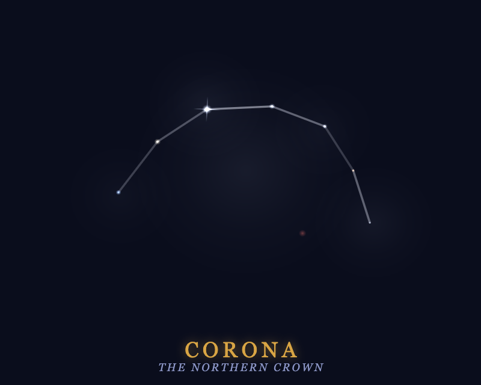
CORONA
THE NORTHERN CROWN
showcase piece · objects 18 battle · 18 home
NEW SKY PIECES
card · store file · game block · jumpr card · plain block · plain card
The sky's real crown: seven stars in a bowl, opening downward as it does over the north in spring. Alphecca, the gem, is the white wish-star and the eye, dipping every seventeen seconds because it is two stars eclipsing. Inside the rim T Coronae, the Blaze Star, breathes red on a thirty-second swell; one night soon it goes off for real.
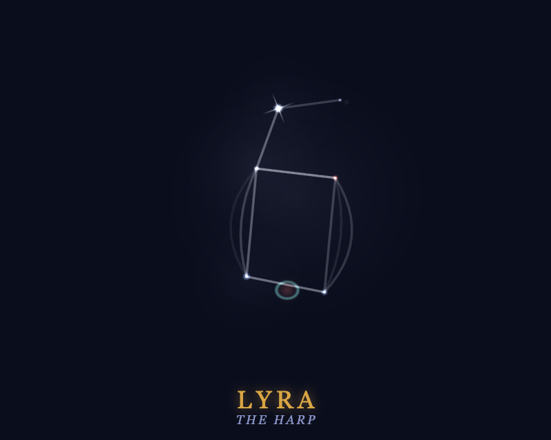
LYRA
THE HARP
showcase piece · objects 18 battle · 18 home
NEW SKY PIECES
card · store file · game block · jumpr card · plain block · plain card
Vega, the star the magnitude scale was once measured from, blazes white at the top as the wish-star and the eye; the little parallelogram hangs under it, its two sides bowed out into the curved arms of a lyre, four arcs the ripple plucks. Sheliak on the lower left dims every thirteen seconds, and on the bottom bar sits the Ring Nebula, teal with a red rim, a sun's last breath.
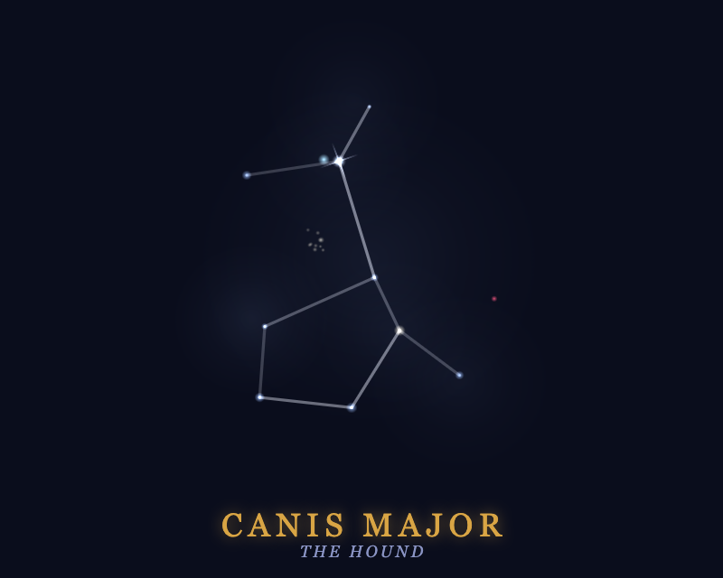
CANIS MAJOR
THE HOUND
showcase piece · objects 23 battle · 23 home
NEW SKY PIECES
card · store file · game block · jumpr card · plain block · plain card
Orion's hound, forever running after the hare: Sirius, the brightest star in the whole sky, is the wish-star at the throat and the eye, with the Pup, a white dwarf the size of Earth, circling it every fifty seconds. Adhara and Wezen carry the haunches, M41 glimmers under the throat, and at the flank a ruby, VY Canis Majoris, one of the largest stars known.
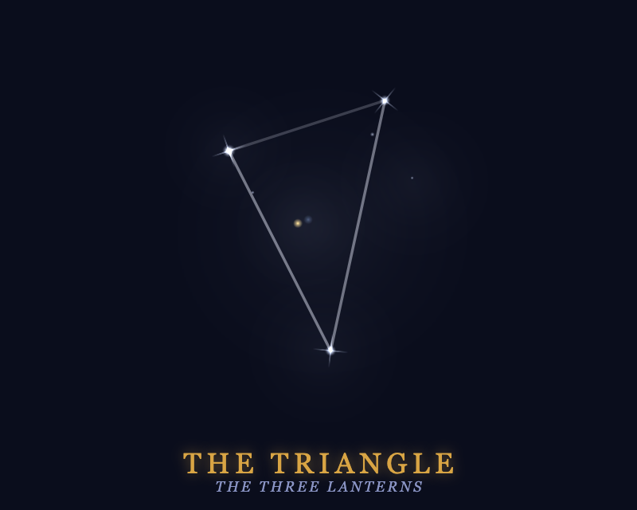
THE TRIANGLE
THE THREE LANTERNS
showcase piece · objects 20 battle · 20 home
NEW SKY PIECES
card · store file · game block · jumpr card · plain block · plain card
The three lanterns of August: Vega, Deneb and Altair, three white first-class stars a hand-span apart, tied by three long lines you can point at from any garden. Between them a faint field, with Albireo, gold beside blue, at the heart. Vega is the eye; the attack is a volley of three.
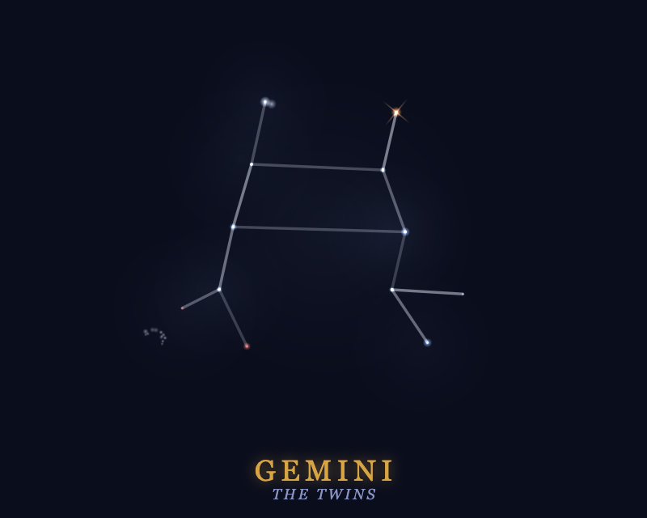
GEMINI
THE TWINS
sign · objects 25 battle · 25 home
PLAIN
card · store file · game block · jumpr card
Two heads, two colours: Pollux orange as the wish-star, Castor white and drawn as the tight pair it shows in any telescope (six stars, truly). Castor's feet, Tejat and Propus, are the two red stars, and M35, a naked-eye cluster, sits under them. A sign has no eye.
LIBRA
THE SCALES
sign · objects 17 battle · 17 home
PLAIN
card · store file · game block · jumpr card
The scales, hung from the one star folklore swears is green: Zubeneschamali at the top of the beam wears the sky's only pale green. Zubenelgenubi, the southern claw, is the wish-star and a wide white-and-cream pair; Brachium burns red at the end of its chain. A sign has no eye.
CAPRICORN
THE SEA-GOAT
sign · objects 21 battle · 21 home
PLAIN
card · store file · game block · jumpr card
The sea-goat's boat as shipped. Deneb Algedi, white at the tail, is the wish-star and an eclipsing pair, dipping a third every six seconds. The horns are the two doubles: Dabih, gold with a blue companion, a second Albireo, and Algedi, the gold twins you can split with your eyes alone. A sign has no eye.
AQUARIUS
THE WATER-BEARER
sign · objects 25 battle · 25 home
PLAIN
card · store file · game block · jumpr card
The water-bearer as shipped: the jar at the top, the stream running down the right. Sadalsuud, gold at the shoulder, is the wish-star, Sadalmelik gold beside the jar, Skat white on the stream. Where the water lands lies the Helix, the Eye of God, the nearest smoke ring in the sky, teal with a rose rim. A sign has no eye.
PISCES
THE TWIN FISH
sign · objects 28 battle · 28 home
PLAIN
card · store file · game block · jumpr card
Two fish tied by a cord, as shipped. Alrescha, the knot where the cords meet, is the wish-star and a close white pair. On the Circlet a ruby, TX Piscium, one of the reddest stars a bare eye can find, breathes on a nine-second swell; under the northern fish floats M74, the Phantom, a spiral seen face-on. A sign has no eye.
ALPHA CEN
THE THREE SISTERS
basic lvl 1 · objects 21 battle · 21 home
NEW SKY PIECES
card · store file · game block · jumpr card · plain block · plain card
The nearest star system, 4.4 light-years off: a gold A and an orange B waltzing on a 24-second eccentric hoop, Proxima a red speck far out on a dashed rail. A and Hadar are the Pointers, the line that finds the Southern Cross, Acrux blue-white at its foot and Gacrux red at its head. The riders are the bolts of the fling; the eye is B.
SATURN
THE CROWNED ONE
boss lvl 1 · objects 22 battle · 21 home
NEW SKY PIECES
card · store file · game block · jumpr card · plain block · plain card
Nine Earths wide with rings 280,000 km across and ten metres thick, tilted 26.7 degrees; Titan, the only moon with real air, circles every 16 days; Enceladus sprays ice. The attack is the rings flashing white; the polar storm is the eye.
JUPITER
THE KING OF WORLDS
boss lvl 2 · objects 24 battle · 23 home
NEW SKY PIECES
card · store file · game block · jumpr card · plain block · plain card
Eleven Earths wide, striped by cloud belts scrolling once every ten seconds, with a storm bigger than Earth that has raged 350 years and IS the eye. Four Galilean moons slide along an edge-on line, dimming in front and vanishing behind; the moons are the bolts of the fling.
SOL
THE LONG ORBIT
boss lvl 3 · objects 26 battle · 25 home
NEW SKY PIECES
card · store file · game block · jumpr card · plain block · plain card
Eight worlds round one star on hoops compressed rx = 10 x AU^0.62 (Neptune barely moves, which is true and teaches; the x6 battle clock is the orrery dial), a belt of 24 baked specks, Pluto dipping inside Neptune's line on a tilted dashed rail. Eight bolts in order.
HALLEY
THE ONCE-A-LIFETIME
mini lvl 1 · objects 18 battle · 18 home
NEW SKY PIECES
card · store file · game block · jumpr card · plain block · plain card
Comes round every 75 years; last seen 1986, back in July 2061, so a child playing tonight will see it. A curved cream dust tail and a straight blue ion tail, both pointing AWAY from the light.
PLEIADES
THE SEVEN SISTERS
basic lvl 1 · objects 27 battle · 27 home
NEW SKY PIECES
card · store file · game block · jumpr card · plain block · plain card
A hundred-million-year-old nursery of hot blue stars in a blue reflection haze; nine named sisters and six companions; Pleione, the lost sister, fades to nothing for a breath every forty seconds. Seven bolts in the volley.
CORONA
THE NORTHERN CROWN
basic lvl 2 · objects 18 battle · 18 home
NEW SKY PIECES
card · store file · game block · jumpr card · plain block · plain card
The sky's actual crown: seven stars in a bowl, Alphecca the Jewel as the wish-star, and T CrB, the Blaze Star, a recurrent nova due any night now, breathing red at the rim.
LYRA
THE SILVER HARP
mini lvl 2 · objects 18 battle · 18 home
NEW SKY PIECES
card · store file · game block · jumpr card · plain block · plain card
Vega, the old zero of the magnitude scale, as the wish-star; a small parallelogram body strung with four harp-string arcs; Sheliak dimming every 12.9 seconds; the Ring Nebula between beta and gamma. The ripple runs down the strings; the attack is a four-strand lash.
CANIS
THE GREAT DOG
mini lvl 2 · objects 23 battle · 23 home
NEW SKY PIECES
card · store file · game block · jumpr card · plain block · plain card
Orion's hound, forever chasing the hare: Sirius at the throat as the wish-star with the Pup circling it once every fifty seconds, Adhara and Wezen in the haunches, M41 under the throat, and VY Canis Majoris, one of the largest stars known, a ruby at the flank.
VORAGO
THE STAR THAT DRINKS
boss lvl 3 · objects 23 battle · 22 home
NEW SKY PIECES
card · store file · game block · jumpr card · plain block · plain card
Cygnus X-1, the first one found: a shadow the colour of the sky inside a photon ring, an accretion disc scrolling cream to ember with the left half brighter (Doppler beaming), and one arm of seven stars falling in, the last two drawn out to streaks as the tide takes them. The true owner of the blackout curse; the attack a jet.
{kind=link}
{kind=link}
{kind=link}
{kind=link}
{kind=link}
{kind=link}
{kind=link}
{kind=link}
{kind=link}
{kind=link}
{kind=link}
{kind=link}
{kind=link}
{kind=link}
{kind=link}
{kind=link}
{kind=link}
{kind=link}
{kind=link}
{kind=link}
{kind=link}
{kind=link}
{kind=link}
{kind=link}
{kind=link}
{kind=link}
{kind=link}
{kind=link}
{kind=link}
{kind=link}
{kind=link}
{kind=link}
{kind=link}
{kind=link}
{kind=link}
{kind=link}
{kind=link}
{kind=link}
{kind=link}
{kind=link}
{kind=link}
{kind=link}
{kind=link}
{kind=link}
{kind=link}
{kind=link}
{kind=link}
{kind=link}
{kind=link}
{kind=link}
{kind=link}
{kind=link}
{kind=link}
{kind=link}
{kind=link}
{kind=link}
{kind=link}
{kind=link}
{kind=link}
{kind=link}
{kind=link}
{kind=link}
{kind=link}
{kind=link}